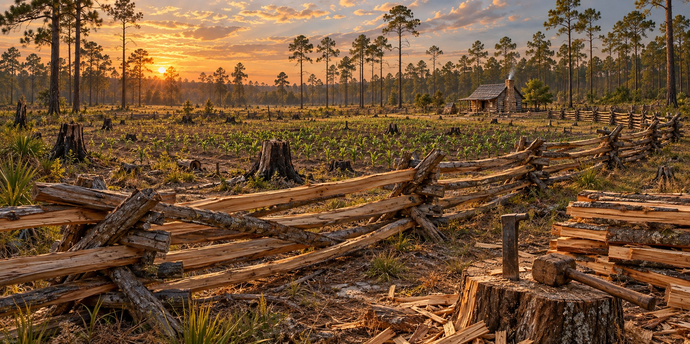

Split-Rail Fences
The Fence That Built Itself from the Forest

Before a pioneer family could plant a garden, they had to fence one. Before they could keep cattle near the homestead or protect corn from hogs rooting through the flatwoods, they had to fence the field. The split-rail fence needed no hardware, no sawmill and no blacksmith, only straight timber, a froe, a mallet and hands that already had too much to do.
The Worm Fence: Engineering Without a Nail
A worm fence, also called a zigzag fence, used stacked rails that overlapped at the corners. Its turns supported the sections without a straight line of buried posts. The design required more ground space than a straight fence but could be taken apart and moved as the farm changed.
Splitting Rails: The Froe and the Grain
Straight-grained timber could be split into rails with wedges and splitting tools. Pine was available across much of Florida, and the choice of wood depended on the locality. Splitting required reading the grain as well as applying force. A fixed daily production figure would hide differences in the timber and the worker’s conditions.
Florida’s Specific Fencing Challenge
Florida’s open-range tradition allowed cattle to roam and made protecting crops a pressing concern for farmers. Fence laws and local practice changed over time. Florida Memory records that Governor Fuller Warren approved the 1949 law requiring livestock owners to keep their animals off public roads—a specific legal milestone, rather than a date when every rural practice changed at once.
The Fence as a Measure of Settlement
Clearing and cultivating land mattered to settlement claims, and a fence could protect that investment. Neighbors sometimes helped with demanding farm work, but neither one crew size nor one style of fence describes every homestead. The work of enclosing fields connected farming choices with the changing rules governing livestock.
Quick Facts
| Wood | Locally available straight-grained timber, including pine |
|---|---|
| Tools | Froe, mallet, broadaxe |
| Fence type | Worm (zigzag); no posts or nails |
| Weak point | Bottom rails rotting in wet ground |
| Where to see | Historic farm exhibits, including Dudley Farm |
Did You Know?
Lincoln’s nickname “The Rail-Splitter” came from this kind of work.
Under open range, the farmer had to fence the cattle out.
Neighbors held “fence frolics” to help a new family fence its first field.
Vocabulary
Froe: a wedge-shaped iron blade struck with a mallet to split wood.
Worm fence: a zigzag rail fence needing no posts or nails.
Open range: land where livestock roamed freely.
Discussion Questions
1. Why was a worm fence so well suited to a growing homestead?
2. How did Florida’s open range tradition change who built fences?
Related Articles
FLH-0049 — Log Construction Methods
FLH-0050 — Building a Homestead
FLH-0051 — Building with What the Land Provided
Sources
Ste. Claire, Dana. Cracker: The Cracker Culture in Florida History. Museum of Arts and Sciences, Daytona Beach, 1998.
Dudley Farm Historic State Park, Newberry, FL. Preserved split-rail fencing.
Armed Occupation Act patent files. Bureau of Land Management, General Land Office Records. glorecords.blm.gov
Florida Memory. State Library and Archives of Florida. floridamemory.com